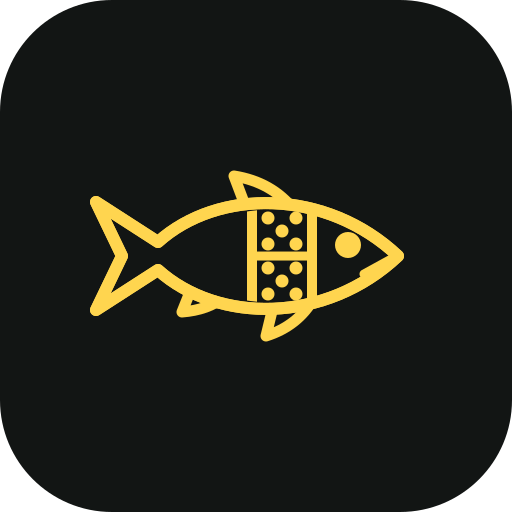

Play All Fives against Bonefish
YouBonefish
Counts completed games, including each game in a series. Saved in this browser.
Bonefish is a modern All Fives dominoes engine inspired by Stockfish. Its C++ search compares how different moves could play out across possible opponent hands. Neural networks help it explore promising moves first and estimate how strong a position is when the search can’t reach the end of the round.
Play against it, then select Analyze game to review your moves and see where you could have improved.